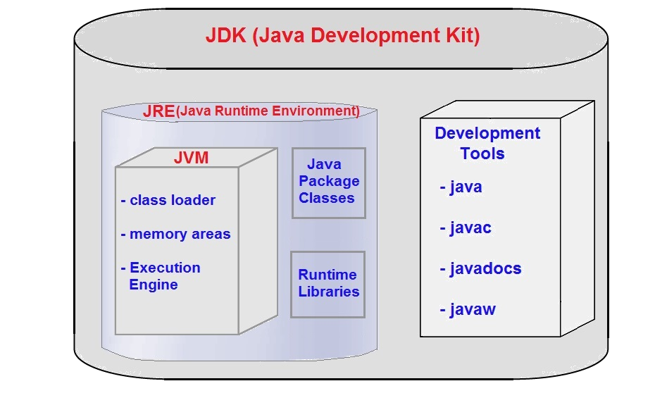

JDK, JRE & JVM:-
⇒ Below is the diagram showing the Architecture of JDK, JRE and JVM.

⇒ JDK (Java Development Kit) :- JDK contains tools needed to develop the java programs. The tools include java compiler (javac.exe), java application launcher (java.exe), java web (javaw.exe), appletviewer, java documentation (javadocs.exe) and many more.
JDK is mainly targeted for java development i.e. we can create java file (with the help of java packages), compile a java file and run the java file.
JDK = JRE + Development Tools
⇒ JRE (Java Runtime Environment) :- JRE contains JVM (Java Virtual Machine), class libraries and other supporting files. It does not contain any development tools like compiler, debugger etc.
If you need to run java program, you need to have JRE installed in your system.
JRE = JVM + Java Package Classes + Runtime Libraries
⇒ JVM (Java Virtual Machine) :- JVM is an abstract machine. It provides runtime environment(or say virtual machine) in which java bytecode can be executed.
JVM is available for many hardware and software platforms. JVM is platform dependent because configuration of each OS differ and this makes java platform independent.
JVM performs following major tasks :-
1. Loads Java Class
2. Verifies java code
3. Allocates memory to variables(local, instance and static variables), current running methods etc
4. Executes the code
⇒ Below is my youtube video link explaining "JDK, JRE & JVM In Java" :-
Click Here To See "JDK, JRE & JVM In Java"